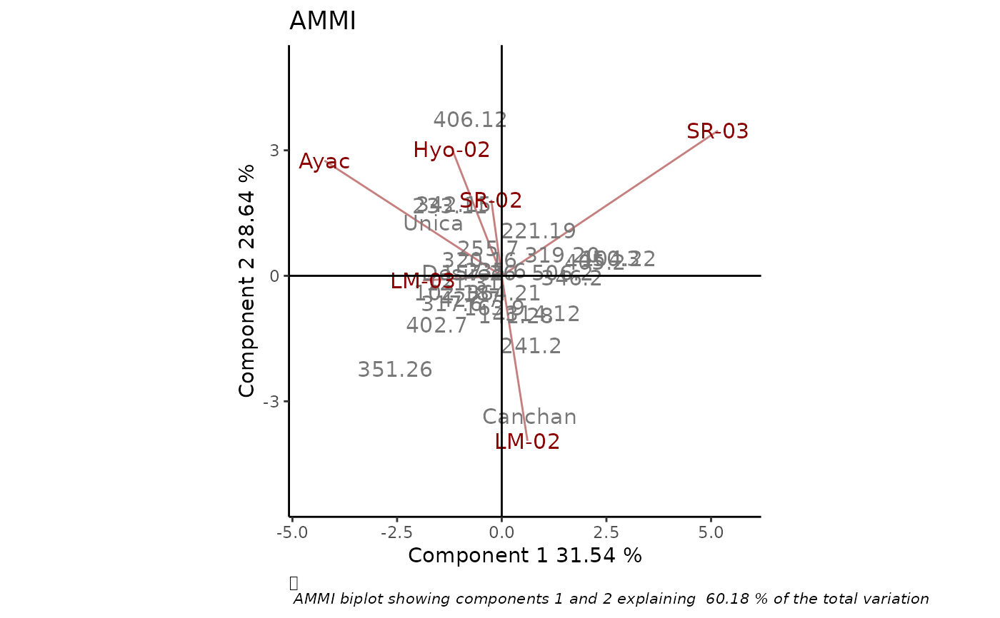

Produces classical or robust AMMI biplot as an object of class 'ggplot', with options for customization.
rAMMI( Data, genotype = "gen", environment = "env", response = "Y", rep = NULL, Ncomp = 2, type = "AMMI", colGen = "gray47", colEnv = "darkred", sizeGen = 4, sizeEnv = 4, titles = TRUE, footnote = TRUE, axis_expand = 1.2, limits = TRUE, axes = TRUE, axislabels = TRUE )
Arguments
| Data | a dataframe with genotypes, environments, repetitions (if any) and the phenotypic trait of interest. There is no restriction on the order in which these variables should be presented in the dataframe, and also other variables that will not be used in the analysis can be included. |
|---|---|
| genotype | column name containing genotypes. |
| environment | column name containing environments. |
| response | column name containing the phenotypic trait of interest. |
| rep | column name containing replications. If this argument is `NULL` (default), replications are not considered for the analysis. |
| Ncomp | number of principal components that will be used in the analysis. |
| type | method for fitting the AMMI model: "AMMI", "rAMMI", "hAMMI", "gAMMI", "lAMMI" or "ppAMMI" (see Details). Defaults to "AMMI". |
| colGen | genotype attributes colour. Defaults to "gray". |
| colEnv | environment attributes colour. Defaults to "darkred". |
| sizeGen | genotype labels text size. Defaults to 4. |
| sizeEnv | environment labels text size. Defaults to 4. |
| titles | logical, if this argument is TRUE a plot title is generated. Defaults to TRUE. |
| footnote | logical, if this argument is TRUE a footnote is generated. Defaults to TRUE. |
| axis_expand | multiplication factor to expand the axis limits by to enable fitting of labels. Defaults to 1.2. |
| limits | logical. If TRUE axes are automatically rescaled. Defaults to TRUE. |
| axes | logical, if this argument is TRUE axes passing through the origin are drawn. Defaults to TRUE. |
| axislabels | logical, if this argument is TRUE labels axes are included. Defaults to TRUE. |
Value
A biplot of class ggplot
Details
Comentar cuál es cada método.
References
Rodrigues P.C., Monteiro A., Lourenco V.M. (2015). A robust AMMI model for the analysis of genotype-by-environment data. Bioinformatics 32, 58–66.
Examples
library(geneticae) # Data without replication data(yan.winterwheat) BIP_AMMI <- rAMMI(yan.winterwheat, genotype = "gen", environment = "env", response = "yield", type = "AMMI") BIP_AMMI# Data with replication data(plrv) BIP_AMMI2 <- rAMMI(plrv, genotype = "Genotype", environment = "Locality", response="Yield", rep = "Rep", type = "AMMI") BIP_AMMI2